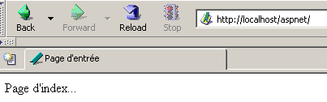
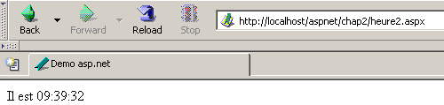
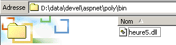

3. ASP.NET Web 开发入门
3.1. 简介
上一章介绍了 Web 开发的基本原理，这些原理与所使用的编程语言无关。目前，有三项技术主导着 Web 开发市场：
- J2EE，这是一个基于 Java 的开发平台。结合 Struts 技术并部署在各种应用服务器上，J2EE 平台主要应用于大型项目。由于其使用的语言是 Java，因此 J2EE 应用程序可以在主流操作系统（Windows、Unix、Linux、Mac OS 等）上运行
- PHP 是一种解释型语言，同样不依赖于操作系统。与 Java 不同，它并非面向对象的语言。不过，预计 PHP5 版本将引入面向对象的特性。由于易于使用，PHP 被广泛应用于中小型项目。
- ASP.NET 是一项仅能在配备 .NET 平台的 Windows 机器（XP、2000、2003 等）上运行的技术。其开发语言可以是任何与 .NET 兼容的语言，即十余种语言，包括微软的语言（C#、VB.NET、J#）、Borland 的 Delphi、Perl、Python 等……
上一章针对这三种技术分别给出了简要示例。本文将重点介绍使用 VB.NET 语言进行 ASP.NET Web 开发。我们假设您已熟悉该语言。这一点非常重要。在此，我们仅关注其在 Web 开发中的应用。让我们通过探讨 Web 开发的 MVC 方法论来详细说明这一点。
遵循 MVC 模型的 Web 应用程序将采用如下结构：

这种被称为三层架构的架构旨在遵循 MVC（模型-视图-控制器）模型：
- 用户界面即 V（视图）
- 应用程序逻辑是 C（控制器）
- 数据源即 M（模型）
用户界面通常是网页浏览器，但也可能是通过网络向 Web 服务发送 HTTP 请求并格式化接收结果的独立应用程序。应用程序逻辑由处理用户请求的脚本组成。 数据源通常是数据库，但也可能是简单的平面文件、LDAP目录、远程Web服务等。保持这三个实体之间高度的独立性符合开发者的最佳利益，这样如果其中一个发生变化，另外两个就不必改变，或者只需做最小的调整。
- 应用程序的业务逻辑将放置在与控制请求-响应对话的类分开的类中。因此，上文的 [Application Logic] 代码块可能包含以下元素：

在 [应用逻辑] 块中，我们可以区分
- 控制器类，它作为应用程序的入口点。
- [业务类] 模块，将应用程序逻辑所需的类集中在一起。这些类与客户端相互独立。
- [数据访问类] 块，将用于检索 Servlet 所需数据的类（通常是持久化数据，如数据库、文件、Web 服务等）归类在一起
- 构成应用程序视图的 ASP 页面块。
在简单的情况下，应用程序逻辑通常可简化为两个类：
- 控制器类，负责处理客户端与服务端之间的通信：处理请求并生成各种响应
- 业务类：从控制器接收待处理数据，并将结果返回给控制器。该业务类随后自行管理对持久化数据的访问。
Web 开发的独特之处在于编写控制器类和呈现页面。业务类和数据访问类是标准的 .NET 类，既可用于 Web 应用程序，也可用于 Windows 应用程序甚至控制台应用程序。编写这些类需要对面向对象编程有扎实的理解。 本文档中将使用 VB.NET 编写这些类，因此我们假设您精通该语言。基于此，我们无需在数据访问代码上过多赘述。几乎所有关于 ASP.NET 的书籍都会专门用一章来讲解 ADO.NET。上图显示，数据访问由标准的 .NET 类处理，这些类并不知道它们正在 Web 环境中被使用。 作为 Web 应用程序“团队领导者”的控制器，无需关心 ADO.NET。它只需知道向哪个类请求所需数据以及如何进行请求，仅此而已。将 ADO.NET 代码放置在控制器中违反了上述 MVC 概念，因此我们不会这样做。
3.2. 工具
本文档面向学生群体，因此我们将使用互联网上可免费下载的工具：
- .NET 平台（编译器、文档）
- WebMatrix 开发环境（包含 Cassini Web 服务器）
- 各种数据库管理系统（MSDE、MySQL）
建议读者查阅附录“Web 工具”，其中说明了如何获取并安装这些工具。大多数情况下，我们只需使用以下三种工具：
- 用于编写 Web 应用程序的文本编辑器。
- 用于编写大量 VB 代码的 VB.NET 开发工具。此类工具通常提供代码输入辅助（自动完成）和语法错误检测功能，这些功能可能在您输入代码时或编译过程中触发。
- 一个 Web 服务器，用于测试您编写的 Web 应用程序。本文将使用 Cassini。拥有 IIS 服务器的读者可以将 Cassini 替换为 IIS。两者均兼容 .NET。不过，Cassini 仅限于响应本地请求（localhost），而 IIS 可以响应来自外部机器的请求。
Microsoft 的 Visual Studio.NET 是用于 VB.NET 开发的优秀商业环境。这款功能丰富的集成开发环境（IDE）允许您管理各类文档（VB.NET 代码、HTML 文档、XML、样式表等）。 在编写代码时，它提供了自动代码“补全”这一极具价值的辅助功能。话虽如此，这一显著提升开发人员生产力的工具也存在一个缺点：它将开发人员限制在一种标准开发模式中，这种模式虽然高效，但并不总是最合适的。
我们完全可以在 [WebMatrix] 之外使用 Cassini 服务器，这也是我们经常会做的事情。服务器可执行文件位于 <WebMatrix>\<version>\WebServer.exe，其中 <WebMatrix> 是 [WebMatrix] 的安装目录，<version> 是其版本号：

现在打开一个命令提示符窗口，并导航至 Cassini 服务器文件夹：
E:\Program Files\Microsoft ASP.NET Web Matrix\v0.6.812>dir
...
29/05/2003 11:00 53 248 WebServer.exe
...
让我们不带任何参数运行 [WebServer.exe]：

上方的面板显示，[WebServer/Cassini] 应用程序接受三个参数：
- /port：Web 服务的端口号。可以是任意数字。默认值为 80
- /path：磁盘上文件夹的物理路径
- /vpath：与前述物理文件夹关联的虚拟文件夹。
我们将示例放置在一个文件树中，其根目录为 P，并包含 chap1、chap2 等文件夹，分别对应本文档的不同章节。我们将虚拟路径 V 与该物理文件夹 P 关联起来。此外，我们将使用以下 DOS 命令启动 Cassini：
例如，如果我们希望服务器的物理根目录为 [D:\data\devel\aspnet\poly]，其虚拟根目录为 [aspnet]，则启动 Web 服务器的 DOS 命令为：
您可以将此命令保存为快捷方式。启动后，Cassini 会在任务栏中放置一个图标。双击该图标将打开服务器启动/停止面板：

该面板显示了用于启动服务器的三个参数。它提供两个启动/停止按钮，以及一个指向 Web 目录树根目录的测试链接。我们点击该链接。浏览器随即打开并请求 URL [http://localhost/aspnet]。我们看到的是上文 [物理路径] 字段中指定文件夹的内容：

在此示例中，请求的 URL 对应的是一个文件夹而非 Web 文档，因此服务器显示的是该文件夹的内容，而非特定的 Web 文档。如果该文件夹中存在名为 [default.aspx] 的文件，则会显示该文件。例如，让我们创建以下文件并将其放置在 Cassini Web 树的根目录下（此处为 d:\data\devel\aspnet\poly）：
现在，让我们使用浏览器请求 URL [http://localhost/aspnet]：

我们可以看到，实际上显示的是 URL [http://localhost/aspnet/default.aspx]。本文稍后将解释如何使用 Cassini(path,vpath) 这种表示法来配置 Cassini，其中 [path] 是服务器 Web 目录树的根文件夹名称，[vpath] 是相关的虚拟路径。 请注意，对于 Cassini(path,vpath) 服务器，URL [http://localhost/vpath/XX] 对应于物理路径 [path\XX]。我们将所有文档都放置在一个名为 <webroot> 的物理根目录下。因此，我们可以引用文件 <webroot>\chap2\here1.aspx。 对于每位读者而言，这个 <webroot> 目录将位于其个人计算机上的某个文件夹中。此处的屏幕截图显示，该文件夹通常为 [d:\data\devel\aspnet\poly]。不过，由于测试是在不同机器上进行的，因此实际情况可能有所不同。
3.3. 第一个示例
我们将展示一些使用 VB.NET 创建的动态网页的简单示例。建议读者亲自测试这些示例，以验证其开发环境是否安装正确。我们将看到构建 ASP.NET 页面有多种方法，并将在后续开发工作中选择其中一种。
3.3.1. 基本示例 - 方案 1
所需工具：文本编辑器、Cassini Web 服务器
我们将重温上一章的示例。我们将创建以下 [heure1.aspx] 文件：
<html>
<head>
<title>Demo asp.net </title>
</head>
<body>
Il est <% =Date.Now.ToString("T") %>
</body>
</html>
这段代码是包含特殊 <% ... %> 标签的 HTML 代码。在此标签内，您可以放置 VB.NET 代码。此处的代码
会生成一个表示当前时间的 C 字符串。随后，<% ... %> 标签会被该 C 字符串替换。因此，如果 C 字符串为 18:11:01，则包含 VB.NET 代码的 HTML 行将变为：
我们将上述代码放入文件 [<webroot>\chap2\heure1.aspx] 中。启动 Cassini(<webroot>,/aspnet)，并在浏览器中访问 URL [http://localhost/aspnet/chap2/heure1.aspx]：

一旦得到此结果，即表明开发环境已正确安装。[heure1.aspx] 页面因包含 VB.NET 代码而被编译。其编译生成的 DLL 文件存储在系统文件夹中，随后由 Cassini 服务器执行。
3.3.2. 基本示例 - 方案 2
所需工具：文本编辑器、Cassini Web 服务器
[heure1.aspx] 文档混合了 HTML 代码和 VB.NET 代码。在如此简单的示例中，这并不构成问题。若需包含更多 VB.NET 代码，建议将 HTML 代码与 VB 代码更明确地分离。可通过将 VB 代码包裹在 <script> 标签中实现：
<script runat="server">
' calcul des données à afficher par le code HTML
...
</script>
<html>
....
' affichage des valeurs calculées par la partie script
</html>
示例 [heure2.aspx] 演示了此方法：
<script runat="server">
Dim maintenant as String=Date.Now.ToString("T")
</script>
<html>
<head>
<title>Demo asp.net </title>
</head>
<body>
Il est
<% =maintenant %>
</body>
</html>
我们将文档 [heure2.aspx] 放置在 Cassini Web 服务器（<webroot>,/aspnet）的目录树 [<webroot>\chap2\heure2.aspx] 中，并使用浏览器请求该文档：

3.3.3. 基本示例 - 变体 3
所需工具：文本编辑器、Cassini Web 服务器
我们将 VB 代码与 HTML 代码的分离进一步深化，将其分别放置在两个独立的文件中。HTML 代码将位于 [heure3.aspx] 文件中，而 VB 代码则位于 [heure3.aspx.vb] 中。[heure3.aspx] 的内容如下：
<%@ Page Language="vb" src="heure3.aspx.vb" Inherits="heure3" %>
<html>
<head>
<title>Demo asp.net</title>
</head>
<body>
Il est
<% =maintenant %>
</body>
</html>
有两个根本区别：
- [Page] 指令的属性尚未定义
- 在 HTML 代码中使用了 [now] 变量，尽管该变量在任何地方都没有被初始化
此处的 [Page] 指令用于指示将初始化该页面的 VB 代码位于另一个文件中。[src] 属性指定了该文件。我们将看到，该 VB 代码属于一个名为 [heure3] 的类。 对开发人员而言，.aspx 文件会被透明地转换为一个从名为 [Page] 的基类派生的类。在此，我们的 HTML 文档必须从定义并计算其所需显示数据的类派生。本例中，该类即 [heure3.aspx.vb] 文件中定义的 [heure3] 类。 因此，我们必须明确 VB 文档 [heure3.aspx.vb] 与 HTML 文档 [heure3.aspx] 之间的这种父子关系。[inherits] 属性用于指定这种关系。它必须指明由 [src] 属性指向的文件中定义的类名。
现在让我们查看该页面的 VB 代码：
Public Class heure3
Inherits System.Web.UI.Page
' data of the web page to be displayed
Protected maintenant As String
Private Sub Page_Load(ByVal sender As System.Object, ByVal e As System.EventArgs) Handles MyBase.Load
'calculates the web page data
maintenant = Date.Now.ToString("T")
End Sub
End Class
请注意以下几点：
- 该 VB 代码定义了一个从 [System.Web.UI.Page] 类派生的类 [heure3]。这是必然的，因为网页必须始终从 [System.Web.UI.Page] 类派生。
- 该类声明了一个受保护的属性 [now]。我们知道，受保护的属性在派生类中是可直接访问的。正是这一点使得 HTML 文档 [heure3.aspx] 能够在其代码中访问 [now] 数据的值。
- [now] 属性在 [Page_Load] 过程 中被初始化。我们稍后将看到，Web 服务器会向 [Page] 对象通知一系列事件。当 [Page] 对象及其组件创建完成时，[Load] 事件就会触发。该事件的处理程序由指令 [Handles MyBase.Load] 指定
- 事件处理程序的名称 [XX] 可以是任意名称。其签名必须与上文所示一致。目前我们暂不对此进行详细说明。
- 我们通常使用 [Page.Load] 事件处理程序来计算网页必须显示的动态数据的值。
文件 [heure3.spx] 和 [heure3.aspx.vb] 位于 [<webroot>\chap2] 目录下。随后，我们使用浏览器向 Web 服务器 (<webroot>,/aspnet) 请求 URL [http://localhost/aspnet/chap2/heure3.aspx]：

3.3.4. 基础示例 - 变体 4
所需工具：文本编辑器、Cassini Web 服务器
我们使用与之前相同的示例，但将所有代码合并到一个文件 [heure4.aspx] 中：
<script runat="server">
' data of the web page to be displayed
Private maintenant As String
' evt page_load
Private Sub Page_Load(ByVal sender As System.Object, ByVal e As System.EventArgs) Handles MyBase.Load
'calculates the web page data
maintenant = Date.Now.ToString("T")
End Sub
</script>
<html>
<head>
<title>Demo asp.net</title>
</head>
<body>
Il est
<% =maintenant %>
</body>
</html>
我们看到与示例 2 相同的代码序列：
这次，VB 代码已被组织成过程。我们可以看到上一个示例中的 [Page_Load] 过程。此处的目的是演示一个独立的 .aspx 页面（未链接到单独文件中的 VB 代码）会被隐式转换为一个从 [Page] 派生的类。 因此，我们可以使用该类的属性、方法和事件。本例正是如此，我们使用了该类的 [Load] 事件。
测试方法与前面的示例完全相同：

3.3.5. 基本示例 - 变体 5
所需工具：文本编辑器、Cassini Web 服务器
与示例 3 一样，我们将 VB 代码和 HTML 代码分别放在两个独立的文件中。VB 代码位于 [heure5.aspx.vb] 中：
Public Class heure5
Inherits System.Web.UI.Page
' data of the web page to be displayed
Protected maintenant As String
Private Sub Page_Load(ByVal sender As System.Object, ByVal e As System.EventArgs) Handles MyBase.Load
'calculates the web page data
maintenant = Date.Now.ToString("T")
End Sub
End Class
HTML 代码放置在 [heure5.aspx] 中：
<%@ Page Inherits="heure5" %>
<html>
<head>
<title>Demo asp.net</title>
</head>
<body>
Il est
<% =maintenant %>
</body>
</html>
这次，[Page] 指令不再指定 HTML 代码与 VB 代码之间的关联。Web 服务器无法再定位 VB 代码进行编译（缺少 src 属性）。因此，我们需要手动执行此编译操作。在 DOS 窗口中，我们编译 VB 类 [heure5.aspx.vb]：
dos>dir
23/03/2004 18:34 133 heure1.aspx
24/03/2004 09:47 232 heure2.aspx
24/03/2004 10:16 183 heure3.aspx
24/03/2004 10:16 332 heure3.aspx.vb
24/03/2004 14:31 440 heure4.aspx
24/03/2004 14:45 332 heure5.aspx.vb
24/03/2004 14:56 148 heure5.aspx
dos>vbc /r:system.dll /r:system.web.dll /t:library /out:heure5.dll heure5.aspx.vb
Compilateur Microsoft (R) Visual Basic .NET version 7.10.3052.4
在上例中，编译器的可执行文件 [vbc.exe] 位于 DOS 系统的 PATH 路径中。如果未包含在 PATH 中，则必须指定 [vbc.exe] 的完整路径，该文件位于 .NET SDK 的安装目录树中。 从 [Page] 派生的类需要 [system.dll、system.web.dll] 中的资源，因此通过编译器的 /r 选项引用了这些 DLL。/t:library 选项用于指示要生成 DLL。/out 选项指定要生成的文件名，本例中为 [heure5.dll]。 该文件包含 Web 文档 [heure5.aspx] 所需的 [heure5] 类。然而，Web 服务器会在特定位置查找所需的 DLL。其中一个位置是位于其目录树根目录下的 [bin] 文件夹。 这个根目录就是我们所说的 <webroot>。对于 IIS 服务器，这通常是 <驱动器>:\inetpub\wwwroot，其中 <驱动器> 是安装了 IIS 的驱动器（C、D 等）。对于 Cassini 服务器，这个根目录对应于启动服务器时使用的 /path 参数。请记住，可以通过双击任务栏中的服务器图标来获取此值：

<webroot> 对应上文提到的 [Physical Path] 属性。因此，我们创建一个 <webroot>\bin 文件夹，并将 [heure5.dll] 放置其中：

准备就绪。我们向 Cassini 服务器（<webroot>,/aspnet）请求 URL [http://localhost/aspnet/chap2/heure5.aspx]：

3.3.6. 基本示例 - 变体 6
所需工具：文本编辑器、Cassini Web 服务器
到目前为止，我们已经说明了一个动态 Web 应用程序包含两个组件：
- 用于计算页面动态部分的 VB 代码
- HTML 代码，有时还包含用于在页面上显示这些值的 VB 代码。这一部分代表发送给 Web 客户端的响应。
组件 1 称为页面控制器组件，组件 2 则是呈现组件。呈现组件应尽可能少包含 VB 代码，甚至完全不包含 VB 代码。我们将看到这是可行的。在此，我们展示了一个仅包含控制器而没有呈现组件的示例。正是控制器本身在无需呈现组件协助的情况下，直接生成发给客户端的响应。
呈现代码如下：
我们可以看到，内部已不再包含任何 HTML 代码。响应直接在控制器中生成：
Public Class heure6
Inherits System.Web.UI.Page
Private Sub Page_Load(ByVal sender As System.Object, ByVal e As System.EventArgs) Handles MyBase.Load
' we work out the answer
Dim HTML As String
HTML = "<html><head><title>heure6</title></head><body>Il est "
HTML += Date.Now.ToString("T")
HTML += "</body></html>"
' we send it
Response.Write(HTML)
End Sub
End Class
在此，控制器构建了完整的响应，而不仅仅是其动态部分。它还会发送该响应。它通过 [Page] 类中类型为 [HttpResponse] 的 [Response] 属性来实现这一点。该对象代表服务器对客户端的响应。 [HttpResponse] 类提供了一个 [Write] 方法，用于向将发送给客户端的 HTML 流中写入内容。在此，我们将待发送的整个 HTML 流存储在 [HTML] 变量中，并通过 [Response.Write(HTML)] 将其发送给客户端。
我们向 Cassini 服务器（<webroot>,/aspnet）请求 URL [http://localhost/aspnet/chap2/heure6.aspx]：

3.3.7. 结论
接下来，我们将使用方法 3，该方法将动态 Web 文档的 VB 代码和 HTML 代码分别放置在两个独立的文件中。此方法的优势在于将 Web 页面拆分为两个组件：
- 一个仅由 VB 代码组成的控制器组件，用于计算页面的动态部分
- 一个呈现组件，即发送给客户端的响应。它由 HTML 代码组成，其中可能包含用于显示动态值的 VB 代码。我们将始终致力于使呈现组件中的 VB 代码尽可能少；理想情况下，完全不包含。
如方法 5 所示，控制器可以独立于 Web 应用程序进行编译。这样做的好处是，您可以完全专注于代码，并在每次编译时获得所有错误的列表。一旦控制器编译完成，就可以测试 Web 应用程序。如果不进行预编译，Web 服务器将负责处理此过程，并逐一报告错误。这可能会被视为繁琐。
对于接下来的示例，只需以下工具即可：
- 一个文本编辑器，用于创建简单的应用程序 HTML 和 VB 文档
- 一个 .NET 开发 IDE，用于构建 VB.NET 类，以便在编写代码时利用此类工具提供的辅助功能。此类工具的一个示例是 CSharpDevelop (http://www.icsharpcode.net)。其使用示例见附录 [Web 开发工具]。
- WebMatrix 工具，用于构建应用程序的展示页面（参见附录 [Web 开发工具]）。
- Cassini 服务器
所有这些工具均免费。